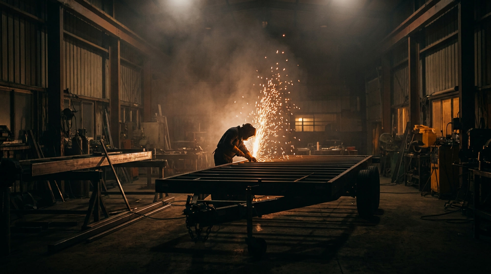

Vente
Neuve ou usagée, inspectée, prête à atteler.
Pro Remorque · Québec · Depuis 2008
Entre. On t'écoute.
Ton besoin d'abord.
Bois de chauffage, machinerie, sled ou side-by-side. Dis-le, c'est notre point de départ.
Fermée, plate ou dompeur.
On marche les rangées avec toi.
Conseillée sur mesure.
Le bon format, le bon essieu, pas de vente à pression.
Elle t'attend.
Repars attelé.
Plus de 12 marques. Financement sur place. Service 5 étoiles.
Pro Remorque · Québec · Depuis 2008
Conseil sur mesure, vente, location et réparation de remorques. En stock, livrée vite, partout au Québec.
01L'inventaire
Si ça se remorque, on l'a. Neuve ou usagée, inspectée, prête à atteler.
En stock, maintenant
Six unités qui sont physiquement dans la cour. Réservez-en une en ligne pour 500 $ — remboursables sept jours — et elle ne se montre plus à personne d'autre.
02Les services
Neuve ou usagée, inspectée, prête à atteler.
Court ou long terme, dès aujourd'hui.
Atelier complet. Unité mobile qui se déplace où t'es pris.

03Le geste
Maintenez le bouton. Le reste, c'est notre job.
Maintenez le bouton enfoncé, ou gardez la barre d'espace appuyée, jusqu'au verrouillage.
Les marques qu'on tient
04Les vraies questions
Les deux. L'usagée est inspectée avant de partir, avec rapport à l'appui.
La plupart sont en stock. Tu l'attelles aujourd'hui ou on te la livre cette semaine.
Oui. Freins, lumières, essieux, soudure. Peu importe où tu l'as achetée.
Financement sur place, réponse rapide.
05On s'attelle
Saint-Nicolas · 1020 Chemin Olivier, Lévis
Thetford · 410 Boul. Frontenac Ouest
Alma · Lac-Saint-Jean
On te rappelle vite. Pour tout de suite: 1 877 939-9494.
Ton logiciel de courriel devrait s'être ouvert avec le message tout prêt. Sinon, appelle-nous : 1 877 939-9494.